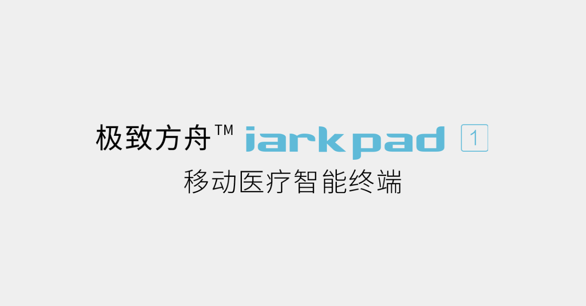

-
CTO (RD) @海管家 (Making Logistics Easier)
- The company integrates the use of AI, big data, cloud computing and other cutting-edge technologies to develop and complete a number of transformative products in the logistics field, providing system solutions and data interfacing services for ports, shipping companies, freight forwarders and shipping agencies.
- Pro Easy HGJ.COM
-
Java Native Cloud Builder (Micro-Services) @Acmedcare+
-
Acmedcare+ focuses on building a complete closed loop of intelligent medical hardware + software + service, and an Internet medical platform ecology of creationism, humanconnection, data connection and service connection.
As a Java Native Cloud Builder ;Build a service-oriented architecture of the company's overall business, focusing on the research and development of underlying technologies, databases, distributed and so on. - Java MS Cloud ACMEDCARE.COM
-
Acmedcare+ focuses on building a complete closed loop of intelligent medical hardware + software + service, and an Internet medical platform ecology of creationism, humanconnection, data connection and service connection.
-
Java & iOS Security @西山居
-
XiShanJu, A Game publisher , is one of the bigger platform for China's game publisher, on which there has over 5,000+ games online .
As a Server Back-End Engineer, I provided iOS Security and SDK Service development for our online game service. Besides, I contribute to performance, iOS Re-package ,Re-sign for Linux and Java Distribute Framework. - iOS XISHANJU.COM
-
XiShanJu, A Game publisher , is one of the bigger platform for China's game publisher, on which there has over 5,000+ games online .
-
Java & C++ Developer @56sino
-
Logistics, China's logistics information network products, to provide the national logistics market supply and demand information, the largest amount of information, the rich information content,
high quality information, information is reliable, real-time information, logistics, China has 15 years of information network operating experience, to provide rich The operation of services,
a huge service channel for members to provide high-quality customer service.
As a Server Back-End & Mobile Engineer, I provided logistics information network servers for our online Desktop Client , Mobile App Client. Besides, I develop System Manager Android Client for Field staff. - Java C++ Deiphi 56SINO.COM
-
Logistics, China's logistics information network products, to provide the national logistics market supply and demand information, the largest amount of information, the rich information content,
high quality information, information is reliable, real-time information, logistics, China has 15 years of information network operating experience, to provide rich The operation of services,
a huge service channel for members to provide high-quality customer service.
Palmer Xu
A Coder ,
Focus & Never Settle